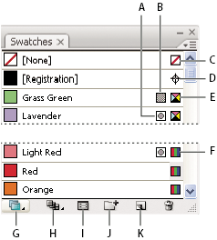

Swatches panel overview
You use the Swatches panel (Window >
Swatches) to control all document colors, gradients, and patterns.
You can name and store any of these items for instant access. When
a selected object’s fill or stroke contains a color, gradient, pattern, or
tint applied from the Swatches panel, the applied swatch is highlighted
in the Swatches panel.

Swatches panel in Small List view
- A.
- Spot color
- B.
- Global color
- C.
- Fill or stroke of None
- D.
- Registration swatch (prints on all plates)
- E.
- CMYK symbol (when document is open in CMYK mode)
- F.
- RGB symbol (when document is open in RGB mode)
- G.
- Swatch Library Menu button
- H.
- Show Swatch Kinds Menu button
- I.
- Swatch Options Menu button
- J.
- New Color Group button
- K.
- New Swatch button
 Change the display of swatches
Change the display of swatches
 Select a view option from the Swatches
panel menu: Small Thumbnail View, Medium Thumbnail View, Large Thumbnail
View, Small List View, or Large List View.
Select a view option from the Swatches
panel menu: Small Thumbnail View, Medium Thumbnail View, Large Thumbnail
View, Small List View, or Large List View.Show a specific type of swatch and hide all others
Click the Show Swatch Kinds button and
choose one of the following: Show All Swatches, Show Color Swatches,
Show Gradient Swatches, Show Pattern Swatches, or Show Color Groups.Select all swatches that aren’t used in artwork
If you want to limit your Swatches panel to only the colors that are used in a document, you can select all unused swatches and then delete them.
Choose Select All Unused in the Swatches panel
menu.Select a color group
- To select the entire group, click the color group icon .
- To select swatches inside the group, click individual swatches.
Note: To edit the selected color group, click the Edit
Color Group button , or double-click
the color group folder. For more information, see Edit colors in the Live Color dialog box.
Select a swatch by name
Select Show Find Field from the
Swatches panel menu. Type the first letter or letters of the swatch’s
name in the Find text box at the top of the panel.
You can also use this method to select a PANTONE swatch by entering the PANTONE number.
Move swatches into a color group
- Drag individual color swatches to an existing color group folder.
- Select the colors you want in a new color group and click the New Color Group button .